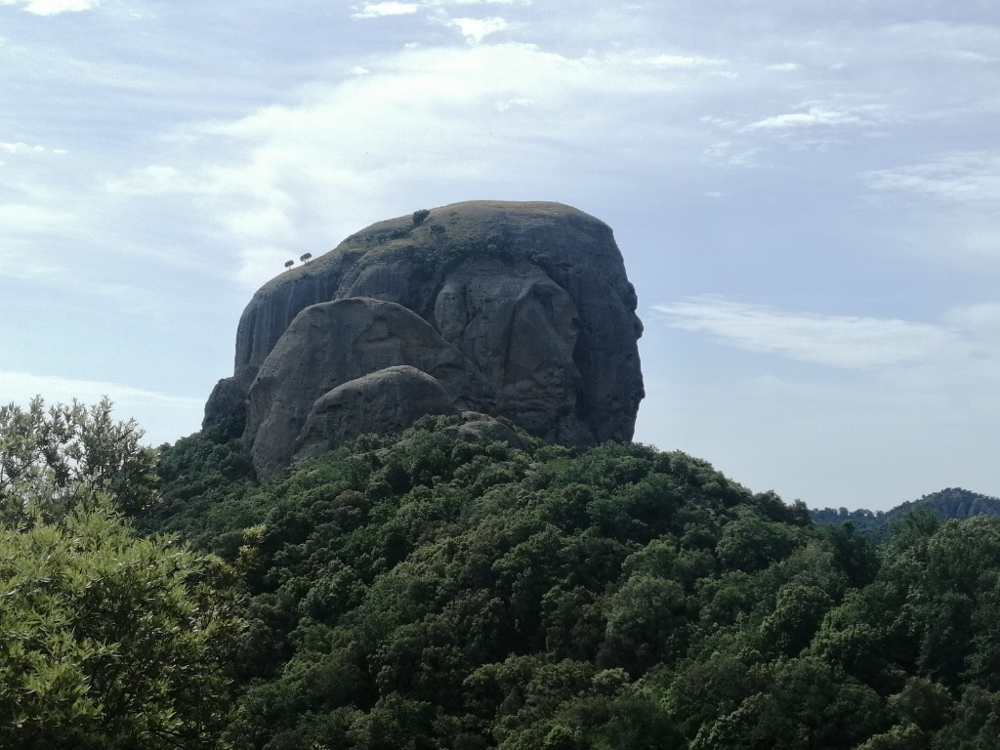
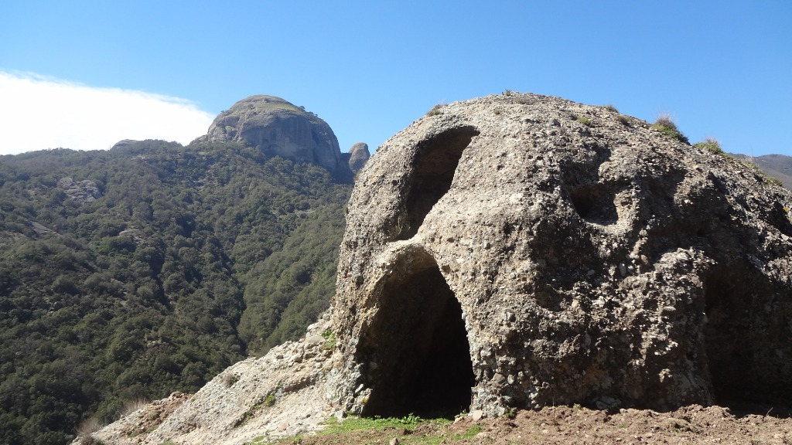
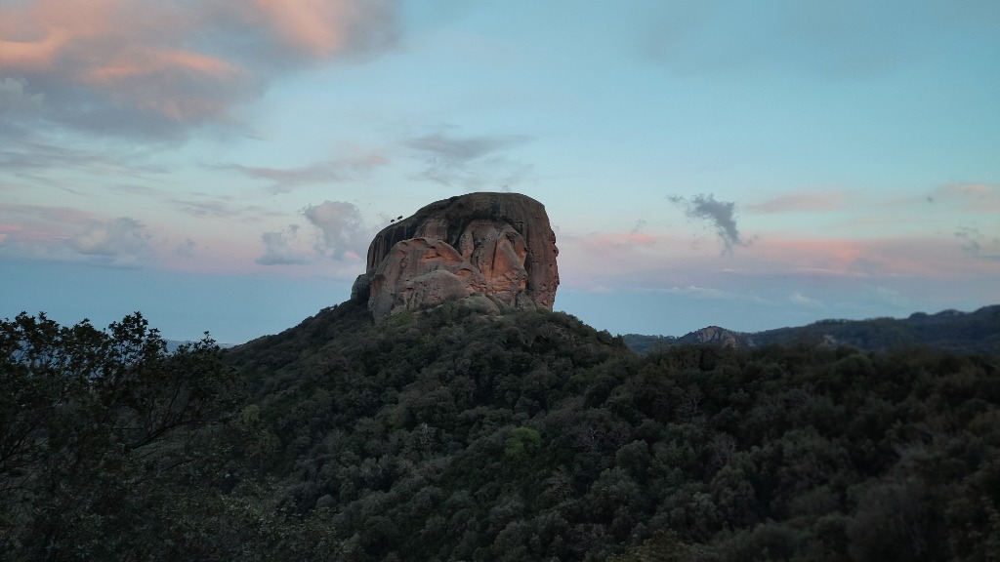
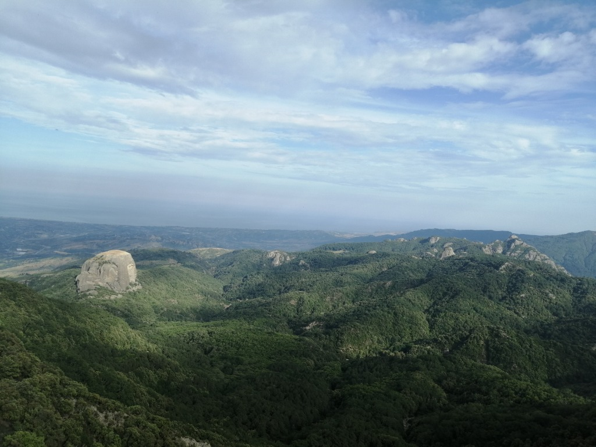
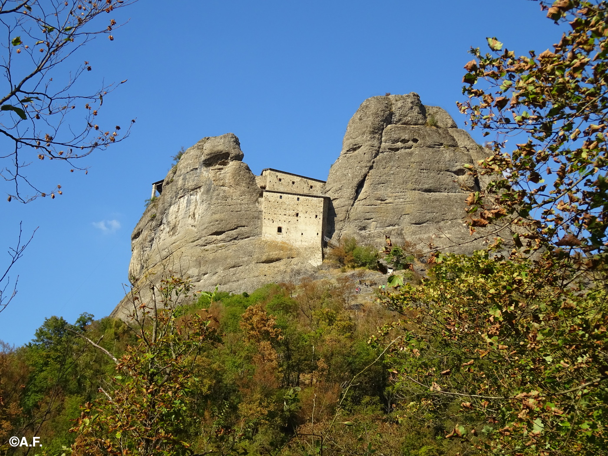

Valle delle Grandi Pietre
Un paesaggio geologico unico, tra monoliti imponenti, eremi bizantini e leggende millenarie nel cuore dell'Aspromonte.
Monolite più alto
Pietra Cappa: 140 m di altezza
Epoca insediamenti
VII-IX sec. d.C. (Monaci Basiliani)
Riconoscimento
Geoparco UNESCO - Geosito internazionale
Superficie
4 ettari (solo Pietra Cappa)
Un Paesaggio Unico al Mondo
La Valle dei Giganti di Pietra
La Valle delle Grandi Pietre è una suggestiva area naturale situata nel Parco Nazionale dell'Aspromonte, tra i territori di San Luca e Careri. Questa valle è famosa per i suoi imponenti monoliti di roccia conglomerata che si ergono maestosi nel paesaggio montano, offrendo scenari unici per escursioni e contemplazione della natura.
Tra le fiumare Careri a nord e Bonamico a sud, una serie di ciclopiche pietre grigio-brune dalle forme più diverse si stagliano contro il cielo emergendo da una lussureggiante e fitta vegetazione: Pietra Cappa, le Rocche di San Pietro, Pietra Tonda, Pietra Lunga, Pietra Stranghiolo, Pietra di Febo, Pietra Castello.
Pietra Cappa: Il Gigante d'Europa
Il Monolito più Alto d'Europa
Con i suoi oltre 140 metri d'altezza e 4 ettari di estensione, Pietra Cappa è il monolite più alto d'Europa, cuore della Valle delle GrandiPietre. La sua imponente forma tondeggiante a "panettone" contrasta con la morfologia selvaggia dell'Aspromonte, spiccando nel verde dei boschi circostanti.
La sua forma a "butte" (collina isolata con fianchi ripidi e sommità pianeggiante) è dovuta alla sua conformazione geologica: conglomerati e arenarie ben cementati risalenti all'Oligocene (33-23 milioni di anni fa). Pietra Cappa, simbolo del Geopark Aspromonte, è un geosito di rilevanza internazionale, inserito nella Rete Globale dei Geoparchi UNESCO.
L'Origine del Nome tra Mito e Storia
Il nome "Pietra Cappa" ha origini antichissime, significa "coppa rovesciata". In alcuni antichi documenti medievali viene definita "Pietra Gauca", ovvero "pietra vuota", in riferimento alle numerose cavità presenti non solo in questo monolite ma in tutta la zona circostante, caratterizzata da insediamenti rupestri che ricordano i paesaggi della Cappadocia.
Secondo una leggenda, Pietra Cappa avrebbe avuto un ruolo nella storia dei Cavalieri Templari: i suoi misteriosi cunicoli che si inoltrano nelle viscere della terra avrebbero offerto nascondiglio ai monaci guerrieri, e qui sarebbe avvenuta la rivelazione del Graal. Un'altra leggenda narra che nella cavità interna sia stato rinchiuso Malco, il servo del Sommo Sacerdote a cui San Pietro mozzò un orecchio.
Eremi e Spiritualità
Le Rocche di San Pietro
Tra il VII e il IX secolo d.C., monaci basiliani in fuga dall'oriente a causa delle persecuzioni dell'imperatore Leone III Isaurico, si spinsero in Calabria alla r icerca di luoghi solitari dove lavorare e pregare. Scelsero proprio questa vallata, consegnando alla storia luoghi sorprendenti come le Rocche di San Pietro e Pietra Castello.
Le Rocche di San Pietro sono un complesso conglomeratico modellato dall'erosione, dove i monaci scavarono nella roccia grotte utilizzate come asceterio (luoghi di preghiera e ritiro spirituale). Si distinguono una grotta principale a due piani intercomunicanti e altre grotte minori, con incisioni, fosse e cavità che testimoniano la presenza umana.
Pietra Castello e la Chiesa di San Giorgio
Pietra Castello è un agglomerato di enormi rocce il cui nome deriva dalla posizione arroccata e dalla presenza di ruderi di un castello risalente al periodo bizantino. Qui sono state ritrovate monete bizantine (395-453 d.C.) conservate al Museo di Reggio Calabria, che attestano la datazione del sito. Corrado Alvaro la definì "un dito proteso verso il cielo".
Poco distante, si trovano i ruderi della chiesetta di San Giorgio, una chiesa lauritica (punto di riferimento per i monaci eremiti dei dintorni). La chiesa aveva un prezioso pavimento in marmo policromo, smontato nel 1936 e oggi conservato (ma non esposto) al Museo Nazionale della Magna Grecia di Reggio Calabria. La sua struttura, con cupola centrale e quattro cupole agli angoli (tetrakionio), era simile alla Cattolica di Stilo.
Geologia e Natura
Un Laboratorio Geologico a Cielo Aperto
La Valle delle Grandi Pietre appartiene alla Formazione di Stilo-Capo d'Orlando, estesa fino ai monti Peloritani in Sicilia. Si tratta di rocce sedimentarie terrigene, conglomerati poligenici compresi tra le unità tettoniche del basamento cristallino e le argille varicolori. Modellati per milioni di anni dall'azione erosiva di acqua e vento, questi conglomerati hanno assunto forme uniche, con superfici lisce, curve e cavità chiamate "tafoni".
La zona è ricca di biodiversità: boschi di leccio, querce, castagni secolari, macchia mediterranea. Tra la fauna, si segnalano la rarissima aquila reale, il lupo (recentemente tornato), il gatto selvatico, cinghiali e istrici. In primavera, l'Aspromonte è un importante punto di transito per migliaia di rapaci che migrano dall'Africa verso l'Europa.
I Monoliti della Valle
Oltre a Pietra Cappa, la valle ospita numerosi altri monoliti:
Pietra Lunga - caratterizzata da una forma
allungata che le conferisce il nome.
Pietra Stranghiolo - nome dialettale che indica
la sua forma particolare.
Pietra Castello - con i ruderi della fortezza
bizantina sulla sommità.
Pietra di Febo - dedicata al dio Apollo,
avvolta nel mito.
Rocche di San Pietro - il complesso rupestre
più importante per la presenza degli eremi basiliani.
Escursioni e Trekking
Itinerari nel Cuore della Valle
La Valle delle Grandi Pietre offre numerosi percorsi per gli amanti del trekking, immersi in una natura rigogliosa e selvaggia. Il percorso più suggestivo parte da Natile Vecchio e raggiunge Pietra Cappa, attraversando boschi di leccio e macchia mediterranea, con una deviazione per visitare le affascinanti Rocche di San Pietro.
L'escursione ha una durata di circa 6 ore, con un dislivello di 400 metri, ed è di livello escursionistico (E), richiedendo un buon allenamento fisico. È consigliabile affidarsi a guide ufficiali del Parco Nazionale dell'Aspromonte o ad associazioni escursionistiche per scoprire gli aspetti meno noti di questo "sentiero dello spirito".
Informazioni per l'escursione
Partenza: Natile Vecchio (o in alternativa San
Luca).
Durata: 6 ore circa.
Difficoltà: E (Escursionistico).
Segnaletica: Sentieri 105 e 124 del catasto
sentieri del Parco Nazionale dell'Aspromonte.
Attrezzatura necessaria: Scarpe con suola
scolpita, abbigliamento a strati, giacca impermeabile, almeno 1
litro d'acqua, colazione al sacco.
Tradizioni e Leggende
La Legenda del Graal
Secondo una leggenda, Pietra Cappa custodirebbe il segreto del Graal. I Cavalieri Templari avrebbero nascosto nei suoi cunicoli sotterranei la mitica coppa del sangue di Cristo, rivelata proprio in questo luogo.
I Monaci Basiliani
La valle conserva la memoria dei monaci orientali che qui trovarono rifugio tra il VII e il IX secolo, scavando chiese-grotte e vivendo in eremitaggio. Le Rocche di San Pietro e Pietra Castello sono le testimonianze più importanti di questa civiltà.
Corrado Alvaro
Il grande scrittore calabrese Corrado Alvaro rimase affascinato da questi luoghi, definendo Pietra Castello "un dito proteso verso il cielo" e contribuendo a raccontare la storia e le leggende della valle.
Il Mito di Malco
La tradizione popolare narra che nella cavità interna di Pietra Cappa sia stato rinchiuso Malco, il servo del Sommo Sacerdote che schiaffeggiò Gesù e al quale San Pietro mozzò un orecchio. Una leggenda che unisce la valle alla Passione di Cristo.
Galleria Fotografica






Info Utili
Come Arrivare
In Auto: SS106 Jonica, seguire indicazioni per
San Luca o Careri. Da qui, proseguire verso Natile Vecchio,
punto di partenza ideale per le escursioni.
Dista circa 30-40 km da Siderno.
Comuni di Riferimento
San Luca (RC)
Via Roma, 89030 San Luca
Careri (RC)
Via Nazionale, 89030 Careri
Ente Parco Nazionale dell'Aspromonte
Sede: Via Aurora, 1 - Gambarie, 89057 Santo
Stefano Aspromonte (RC)
Tel: 0965 743060
Email:
info.posta@parconazionaleaspromonte.it
Sito web:
www.parconazionaleaspromonte.it
Escursioni e Sicurezza
Punto di partenza: Natile Vecchio (San Luca) o
in alternativa San Luca.
Difficoltà: E (Escursionistico) – 6 ore
circa.
Equipaggiamento consigliato: scarpe con suola
scolpita, abbigliamento a strati, giacca impermeabile, almeno 1
litro d'acqua, colazione al sacco.